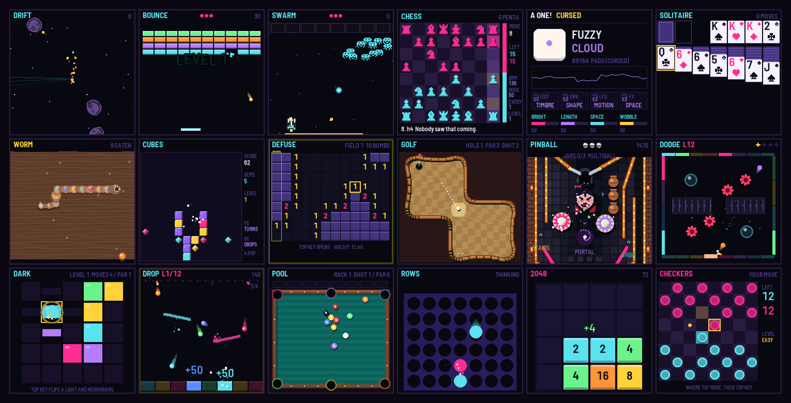

Mighty Arcade
18 music-making games for the M-VAVE FM-1
Mighty Arcade, from the creator of Mighty Arp, is custom firmware for the M-VAVE FM-1: 18 music-making games. Every game is built around a generative sequencer: the board, the cards, the balls and the creatures all work together to make generative music while you play.

What's inside
- 18 games on two pages. Arcade games (Drift, Bounce, Swarm, Pinball, Dodge, Drop), board and card games (Chess, Checkers, Rows, Solitaire, 2048), puzzles (Cubes, Defuse, Dark, Worm), Golf, Pool and Dice Synth.
- Every game is a sequencer. Your moves, cards, balls and catches are the notes, a playhead plays them in time, and the drums build as you get further.
- One key for everything. PRESET picks the scale and ALGORITHM the key, shared by every game.
- The knobs shape the music. Tempo, the chance a note plays, the sound, and how loud the game's effects are. Turn the effects to zero and only the music plays.
- One player or two. Take turns with a friend, or play the computer in Chess, Checkers and Rows.
- No manual needed. EDIT shows what every control does in the game on screen.
Installing is at your own risk; the installer can put M-VAVE's own firmware back ("Back to the stock firmware"), as can M-VAVE's updater, M-UPGRADE, from m-vave.com/download. Mighty Arcade is by Nick Culbertson. M-VAVE and FM-1 are trademarks of their owners. Mighty Arcade is not affiliated with M-VAVE.